Линейные уравнения с двумя переменными
У школьника имеется 200 рублей, чтобы пообедать в школе. Пирожное стоит 25 рублей, а чашка кофе 10 рублей. Сколько пирожных и чашек кофе можно накупить на 200 рублей?
Обозначим количество пирожных через x, а количество чашек кофе через y. Тогда стоимость пирожных будет обозначаться через выражение 25x, а стоимость чашек кофе через 10y.
25x — стоимость x пирожных
10y — стоимость y чашек кофе
Итоговая сумма должна равняться 200 рублей. Тогда получится уравнение с двумя переменными x и y
25x + 10y = 200
Сколько корней имеет данное уравнение?
Всё зависит от аппетита школьника. Если он купит 6 пирожных и 5 чашек кофе, то корнями уравнения будут числа 6 и 5.
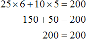
Говорят, что пара значений 6 и 5 являются корнями уравнения 25x + 10y = 200. Записывается как (6; 5), при этом первое число является значением переменной x, а второе — значением переменной y.
6 и 5 не единственные корни, которые обращают уравнение 25x + 10y = 200 в тождество. При желании на те же 200 рублей школьник может купить 4 пирожных и 10 чашек кофе:
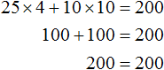
В этом случае корнями уравнения 25x + 10y = 200 является пара значений (4; 10).
Более того, школьник может вообще не покупать кофе, а купить пирожные на все 200 рублей. Тогда корнями уравнения 25x + 10y = 200 будут значения 8 и 0
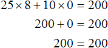
Или наоборот, не покупать пирожные, а купить кофе на все 200 рублей. Тогда корнями уравнения 25x + 10y = 200 будут значения 0 и 20
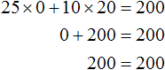
Попробуем перечислить все возможные корни уравнения 25x + 10y = 200. Условимся, что значения x и y принадлежат множеству целых чисел. И пусть эти значения будут бóльшими или равными нулю:
x ∈ Z, y ∈ Z;
x ≥ 0, y ≥ 0
Так будет удобно и самому школьнику. Пирожные удобнее покупать целыми, чем к примеру несколько целых пирожных и половину пирожного. Кофе также удобнее брать целыми чашками, чем к примеру несколько целых чашек и половину чашки.
Заметим, что при нечетном x невозможно достичь равенства ни при каком y. Тогда значениями x будут следующие числа 0, 2, 4, 6, 8. А зная x можно без труда определить y
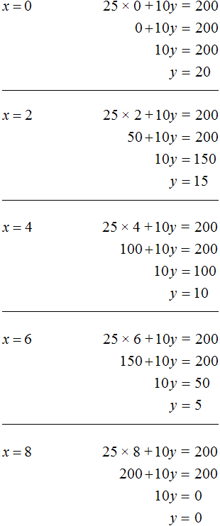
Таким образом, мы получили следующие пары значений (0; 20), (2; 15), (4; 10), (6; 5), (8; 0). Эти пары являются решениями или корнями уравнения 25x + 10y = 200. Они обращают данное уравнение в тождество.
Уравнение вида ax + by = c называют линейным уравнением с двумя переменными. Решением или корнями этого уравнения называют пару значений (x; y), которая обращает его в тождество.
Отметим также, что если линейное уравнение с двумя переменными записано в виде ax + by = c, то говорят, что оно записано в каноническом (нормальном) виде.
Некоторые линейные уравнения с двумя переменными могут быть приведены к каноническому виду.
Например, уравнение 2(16x + 3y − 4) = 2(12 + 8x − y) можно привести к виду ax + by = c. Раскроем скобки в обеих частях этого уравнения, получим 32x + 6y − 8 = 24 + 16x − 2y. Слагаемые, содержащие неизвестные сгруппируем в левой части уравнения, а слагаемые свободные от неизвестных — в правой. Тогда получим 32x − 16x + 6y + 2y = 24 + 8. Приведём подобные слагаемые в обеих частях, получим уравнение 16x + 8y = 32. Это уравнение приведено к виду ax + by = c и является каноническим.
Рассмотренное ранее уравнение 25x + 10y = 200 также является линейным уравнением с двумя переменными в каноническом виде. В этом уравнении параметры a, b и c равны значениям 25, 10 и 200 соответственно.
На самом деле уравнение ax + by = c имеет бесчисленное множество решений. Решая уравнение 25x + 10y = 200, мы искали его корни только на множестве целых чисел. В результате получили несколько пар значений, которые обращали данное уравнение в тождество. Но на множестве рациональных чисел уравнение 25x + 10y = 200 будет иметь бесчисленное множество решений.
Для получения новых пар значений, нужно взять произвольное значение для x, затем выразить y. К примеру, возьмем для переменной x значение 7. Тогда получим уравнение с одной переменной 25 × 7 + 10y = 200 в котором можно выразить y
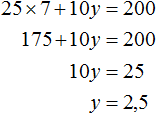
Пусть x = 15. Тогда уравнение 25x + 10y = 200 примет вид 25 × 15 + 10y = 200. Отсюда находим, что y = −17,5
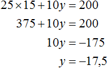
Пусть x = −3. Тогда уравнение 25x + 10y = 200 примет вид 25 × (−3) + 10y = 200. Отсюда находим, что y = 27,5
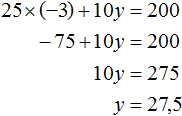
Система двух линейных уравнений с двумя переменными
Для уравнения ax + by = c можно сколько угодно раз брать произвольные значение для x и находить значения для y. Отдельно взятое такое уравнение будет иметь бесчисленное множество решений.
Но бывает и так, что переменные x и y связаны не одним, а двумя уравнениями. В этом случае они образуют так называемую систему линейных уравнений с двумя переменными. Такая система уравнений может иметь одну пару значений (или по-другому: «одно решение»).
Может случиться и так, что система вовсе не имеет решений. Бесчисленное множество решений система линейных уравнений может иметь в редких и в исключительных случаях.
Два линейных уравнения образуют систему тогда, когда значения x и y входят в каждое из этих уравнений.
Вернемся к самому первому уравнению 25x + 10y = 200. Одной из пар значений для этого уравнения была пара (6; 5). Это случай, когда на 200 рублей можно можно было купить 6 пирожных и 5 чашек кофе.
Составим задачу так, чтобы пара (6; 5) стала единственным решением для уравнения 25x + 10y = 200. Для этого составим ещё одно уравнение, которое связывало бы те же x пирожных и y чашечек кофе.
Поставим текст задачи следующим образом:
«Школьник купил на 200 рублей несколько пирожных и несколько чашек кофе. Пирожное стоит 25 рублей, а чашка кофе 10 рублей. Сколько пирожных и чашек кофе купил школьник, если известно что количество пирожных на одну единицу больше количества чашек кофе?»
Первое уравнение у нас уже есть. Это уравнение 25x + 10y = 200. Теперь составим уравнение к условию «количество пирожных на одну единицу больше количества чашек кофе».
Количество пирожных это x, а количество чашек кофе это y. Можно записать эту фразу с помощью уравнения x − y = 1. Это уравнение будет означать, что разница между пирожными и кофе составляет 1.
Либо второе уравнение можно записать как x = y + 1. Это уравнение означает, что количество пирожных на единицу больше, чем количество чашек кофе. Поэтому для получения равенства, к количеству чашек кофе прибавлена единица. Это легко можно понять, если воспользоваться моделью весов, которые мы рассматривали при изучении простейших задач:
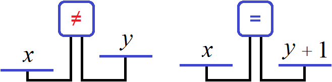
Получили два уравнения: 25x + 10y = 200 и x = y + 1. Поскольку значения x и y, а именно 6 и 5 входят в каждое из этих уравнений, то вместе они образуют систему. Запишем эту систему. Если уравнения образуют систему, то они обрамляются знаком системы. Знак системы это фигурная скобка:
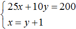
Давайте решим данную систему. Это позволит увидеть, как мы придём к значениям 6 и 5. Существует много методов решения таких систем. Рассмотрим наиболее популярные из них.
Метод подстановки
Название этого метода говорит само за себя. Суть его заключается в том, чтобы одно уравнение подставить в другое, предварительно выразив одну из переменных.
В нашей системе ничего выражать не нужно. Во втором уравнении x = y + 1 переменная x уже выражена. Эта переменная равна выражению y + 1. Тогда можно подставить это выражение в первое уравнение вместо переменной x
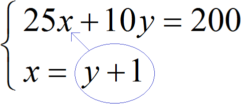
После подстановки выражения y + 1 в первое уравнение вместо x, получим уравнение 25(y + 1) + 10y = 200. Это линейное уравнение с одной переменной. Такое уравнение решить довольно просто:
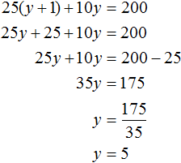
Мы нашли значение переменной y. Теперь подставим это значение в одно из уравнений и найдём значение x. Для этого удобно использовать второе уравнение x = y + 1. В него и подставим значение y
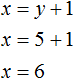
Значит пара (6; 5) является решением системы уравнений, как мы и задумывали. Выполняем проверку и убеждаемся, что пара (6; 5) удовлетворяет системе:
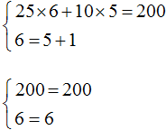
Пример 2. Решить методом подстановки следующую систему уравнений:
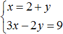
Подставим первое уравнение x = 2 + y во второе уравнение 3x − 2y = 9. В первом уравнении переменная x равна выражению 2 + y. Это выражение и подставим во второе уравнение вместо x
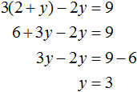
Теперь найдём значение x. Для этого подставим значение y в первое уравнение x = 2 + y
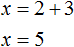
Значит решением системы является пара значение (5; 3)
Пример 3. Решить методом подстановки следующую систему уравнений:
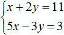
Здесь в отличие от предыдущих примеров, одна из переменных не выражена явно.
Чтобы подставить одно уравнение в другое, сначала нужно выразить одну из переменных.
Выражать желательно ту переменную, которая имеет коэффициент единицу. Коэффициент единицу имеет переменная x, которая содержится в первом уравнении x + 2y = 11. Эту переменную и выразим.
После выражения переменной x, наша система примет следующий вид:
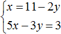
Теперь подставим первое уравнение во второе и найдем значение y
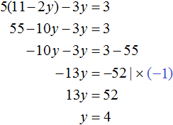
Подставим y в первое уравнение и найдём x
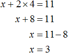
Значит решением системы является пара значений (3; 4)
Конечно, выражать можно и переменную y. Корни от этого не изменятся. Но если выразить y, получится не очень-то и простое уравнение, на решение которого уйдет больше времени. Выглядеть это будет следующим образом:
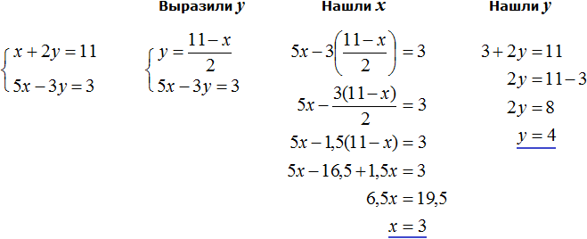
Видим, что в данном примере выражать x намного удобнее, чем выражать y.
Пример 4. Решить методом подстановки следующую систему уравнений:
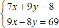
Выразим в первом уравнении x. Тогда система примет вид:
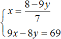
Подставим первое уравнение во второе и найдём y
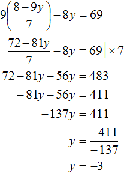
Подставим y в первое уравнение и найдём x. Можно воспользоваться изначальным уравнением 7x + 9y = 8, либо воспользоваться уравнением
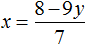
, в котором выражена переменная x. Этим уравнением и воспользуемся, поскольку это удобно: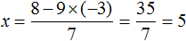
Значит решением системы является пара значений (5; −3)
Метод сложения
Метод сложения заключается в том, чтобы почленно сложить уравнения, входящие в систему. Это сложение приводит к тому, что образуется новое уравнение с одной переменной. А решить такое уравнение довольно просто.
Решим следующую систему уравнений:
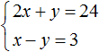
Сложим левую часть первого уравнения с левой частью второго уравнения. А правую часть первого уравнения с правой частью второго уравнения. Получим следующее равенство:
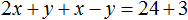
Приведем подобные слагаемые:
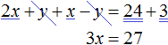
В результате получили простейшее уравнение 3x = 27 корень которого равен 9. Зная значение x можно найти значение y. Подставим значение x во второе уравнение x − y = 3. Получим 9 − y = 3. Отсюда y = 6.
Значит решением системы является пара значений (9; 6)
Пример 2. Решить следующую систему уравнений методом сложения:
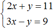
Сложим левую часть первого уравнения с левой частью второго уравнения. А правую часть первого уравнения с правой частью второго уравнения. В получившемся равенстве приведем подобные слагаемые:
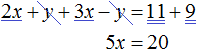
В результате получили простейшее уравнение 5x = 20, корень которого равен 4. Зная значение x можно найти значение y. Подставим значение x в первое уравнение 2x + y = 11. Получим 8 + y = 11. Отсюда y = 3.
Значит решением системы является пара значений (4;3)
Процесс сложения подробно не расписывают. Его нужно выполнять в уме. При сложении оба уравнения должны быть приведены к каноническому виду. То есть к виду ax + by = c.
Из рассмотренных примеров видно, что основная цель сложения уравнений это избавление от одной из переменных. Но не всегда удаётся сразу решить систему уравнений методом сложения. Чаще всего систему предварительно приводят к виду, при котором можно сложить уравнения, входящие в эту систему.
Например, систему
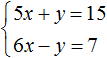
можно сразу решить методом сложения. При сложении обоих уравнений, слагаемые y и −y исчезнут, поскольку их сумма равна нулю. В результате образуется простейшее уравнение 11x = 22, корень которого равен 2. Затем можно будет определить y равный 5.А систему уравнений
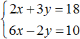
методом сложения сразу решить нельзя, поскольку это не приведёт к исчезновению одной из переменных. Сложение приведет к тому, что образуется уравнение 8x + y = 28, имеющее бесчисленное множество решений.Если обе части уравнения умножить или разделить на одно и то же число, не равное нулю, то получится уравнение равносильное данному. Это правило справедливо и для системы линейных уравнений с двумя переменными. Одно из уравнений (или оба уравнения) можно умножить на какое-нибудь число. В результате получится равносильная система, корни которой будут совпадать с предыдущей.
Вернемся к самой первой системе , которая описывала сколько пирожных и чашек кофе купил школьник. Решением этой системы являлась пара значений (6; 5).
Умножим оба уравнения, входящие в эту систему на какие-нибудь числа. Скажем первое уравнение умножим на 2, а второе на 3
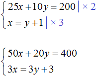
В результате получили систему
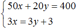
Решением этой системы по-прежнему является пара значений (6; 5)
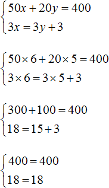
Это значит, что уравнения входящие в систему можно привести к виду, пригодному для применения метода сложения.
Вернемся к системе , которую мы не смогли решить методом сложения.
Умножим первое уравнение на 6, а второе на −2
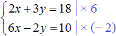
Тогда получим следующую систему:
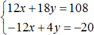
Сложим уравнения, входящие в эту систему. Сложение компонентов 12x и −12x даст в результате 0, сложение 18y и 4y даст 22y, а сложение 108 и −20 даст 88. Тогда получится уравнение 22y = 88, отсюда y = 4.
Если первое время тяжело складывать уравнения в уме, то можно записывать как складывается левая часть первого уравнения с левой частью второго уравнения, а правая часть первого уравнения с правой частью второго уравнения:
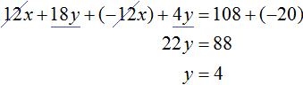
Зная, что значение переменной y равно 4, можно найти значение x. Подставим y в одно из уравнений, например в первое уравнение 2x + 3y = 18. Тогда получим уравнение с одной переменной 2x + 12 = 18. Перенесем 12 в правую часть, изменив знак, получим 2x = 6, отсюда x = 3.
Пример 4. Решить следующую систему уравнений методом сложения:
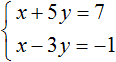
Умножим второе уравнение на −1. Тогда система примет следующий вид:
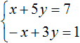
Сложим оба уравнения. Сложение компонентов x и −x даст в результате 0, сложение 5y и 3y даст 8y, а сложение 7 и 1 даст 8. В результате получится уравнение 8y = 8, корень которого равен 1. Зная, что значение y равно 1, можно найти значение x.
Подставим y в первое уравнение, получим x + 5 = 7, отсюда x = 2
Пример 5. Решить следующую систему уравнений методом сложения:
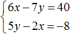
Желательно, чтобы слагаемые содержащие одинаковые переменные, располагались друг под другом. Поэтому во втором уравнении слагаемые 5y и −2x поменяем местами. В результате система примет вид:
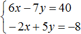
Умножим второе уравнение на 3. Тогда система примет вид:
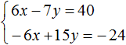
Теперь сложим оба уравнения. В результате сложения получим уравнение 8y = 16, корень которого равен 2.
Подставим y в первое уравнение, получим 6x − 14 = 40. Перенесем слагаемое −14 в правую часть, изменив знак, получим 6x = 54. Отсюда x = 9.
Пример 6. Решить следующую систему уравнений методом сложения:
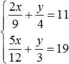
Избавимся от дробей. Умножим первое уравнение на 36, а второе на 12
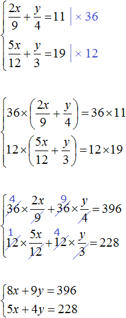
В получившейся системе
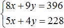
первое уравнение можно умножить на −5, а второе на 8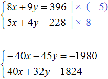
Сложим уравнения в получившейся системе. Тогда получим простейшее уравнение −13y = −156. Отсюда y = 12. Подставим y в первое уравнение и найдем x
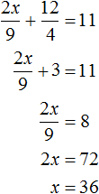
Пример 7. Решить следующую систему уравнений методом сложения:
Приведем оба уравнения к нормальному виду. Здесь удобно применить правило пропорции в обоих уравнениях. Если в первом уравнении правую часть представить как , а правую часть второго уравнения как , то система примет вид:
У нас получилась пропорция. Перемножим её крайние и средние члены. Тогда система примет вид:
Первое уравнение умножим на −3, а во втором раскроем скобки:
Теперь сложим оба уравнения. В результате сложения этих уравнений, мы получим равенство, в обеих частях которого будет ноль:
Получается, что система имеет бесчисленное множество решений.
Но мы не можем просто так взять с неба произвольные значения для x и y. Мы можем указать одно из значений, а другое определится в зависимости от значения, указанного нами. Например, пусть x = 2. Подставим это значение в систему:
В результате решения одного из уравнений, определится значение для y, которое будет удовлетворять обоим уравнениям:
Получившаяся пара значений (2; −2) будет удовлетворять системе:
Найдём еще одну пару значений. Пусть x = 4. Подставим это значение в систему:
На глаз можно определить, что значение y равно нулю. Тогда получим пару значений (4; 0), которая удовлетворяет нашей системе:
Пример 8. Решить следующую систему уравнений методом сложения:
Умножим первое уравнение на 6, а второе на 12
Перепишем то, что осталось:
Раскроем скобки в обоих уравнениях и приведём подобные слагаемые:
Первое уравнение умножим на −1. Тогда система примет вид:
Теперь сложим оба уравнения. В результате сложения образуется уравнение 6b = 48, корень которого равен 8. Подставим b в первое уравнение и найдём a
Система линейных уравнений с тремя переменными
В линейное уравнение с тремя переменными входит три переменные с коэффициентами, а также свободный член. В каноническом виде его можно записать следующим образом:
ax + by + cz = d
Данное уравнение имеет бесчисленное множество решений. Придавая двум переменным различные значения, можно найти третье значение. Решением в этом случае является тройка значений (x; y; z) которая обращает уравнение в тождество.
Если переменные x, y, z связаны между собой тремя уравнениями, то образуется система трех линейных уравнений с тремя переменными. Для решения такой системы можно применять те же методы, которые применяются к линейным уравнениям с двумя переменными: метод подстановки и метод сложения.
Пример 1. Решить следующую систему уравнений методом подстановки:
Выразим в третьем уравнении x. Тогда система примет вид:
Теперь выполним подстановку. Переменная x равна выражению 3 − 2y − 2z. Подставим это выражение в первое и второе уравнение:
Раскроем скобки в обоих уравнениях и приведём подобные слагаемые:
Мы пришли к системе линейных уравнений с двумя переменными. В данном случае удобно применить метод сложения. В результате переменная y исчезнет, и мы сможем найти значение переменной z
Теперь найдём значение y. Для этого удобно воспользоваться уравнением −y + z = 4. Подставим в него значение z
Теперь найдём значение x. Для этого удобно воспользоваться уравнением x = 3 − 2y − 2z. Подставим в него значения y и z
Таким образом, тройка значений (3; −2; 2) является решением нашей системы. Проверкой убеждаемся, что эти значения удовлетворяют системе:
Пример 2. Решить систему методом сложения
Сложим первое уравнение со вторым, умноженным на −2.
Если второе уравнение умножить на −2, то оно примет вид −6x + 6y − 4z = −4. Теперь сложим его с первым уравнением:
Видим, что в результате элементарных преобразований, определилось значение переменной x. Оно равно единице.
Вернемся к главной системе. Сложим второе уравнение с третьим, умноженным на −1. Если третье уравнение умножить на −1, то оно примет вид −4x + 5y − 2z = −1. Теперь сложим его со вторым уравнением:
Получили уравнение x − 2y = −1. Подставим в него значение x, которое мы находили ранее. Тогда мы сможем определить значение y
Теперь нам известны значения x и y. Это позволяет определить значение z. Воспользуемся одним из уравнений, входящим в систему:
Таким образом, тройка значений (1; 1; 1) является решением нашей системы. Проверкой убеждаемся, что эти значения удовлетворяют системе:
Задачи на составление систем линейных уравнений
Задача на составление систем уравнений решается путем ввода нескольких переменных. Далее составляются уравнения на основании условий задачи. Из составленных уравнений образуют систему и решают её. Решив систему, необходимо выполнить проверку на то, удовлетворяет ли её решение условиям задачи.
Задача 1. Из города в колхоз выехала машина «Волга». Обратно она возвращалась по другой дороге, которая была на 5 км короче первой. Всего в оба конца машина проехала 35 км. Сколько километров составляет длина каждой дороги?
Решение
Пусть x — длина первой дороги, y — длина второй. Если в оба конца машина проехала 35 км, то первое уравнение можно записать как x + y = 35. Это уравнение описывает сумму длин обеих дорог.
Сказано, что обратно машина возвращалась по дороге которая была короче первой на 5 км. Тогда второе уравнение можно записать как x − y = 5. Это уравнение показывает, что разница между длинами дорог составляет 5 км.
Либо второе уравнение можно записать как x = y + 5. Этим уравнением и воспользуемся.
Поскольку переменные x и y в обоих уравнениях обозначают одно и то же число, то мы можем образовать из них систему:
Решим эту систему каким-нибудь из изученных ранее методов. В данном случае удобно воспользоваться методом подстановки, поскольку во втором уравнении переменная x уже выражена.
Подставим второе уравнение в первое и найдём y
Подставим найденное значение y в во второе уравнение x = y + 5 и найдём x
Длина первой дороги была обозначена через переменную x. Теперь мы нашли её значение. Переменная x равна 20. Значит длина первой дороги составляет 20 км.
А длина второй дороги была обозначена через y. Значение этой переменной равно 15. Значит длина второй дороги составляет 15 км.
Выполним проверку. Для начала убедимся, что система решена правильно:
Теперь проверим удовлетворяет ли решение (20; 15) условиям задачи.
Было сказано, что всего в оба конца машина проехала 35 км. Складываем длины обеих дорог и убеждаемся, что решение (20; 15) удовлетворяет данному условию: 20 км + 15 км = 35 км
Следующее условие: обратно машина возвращалась по другой дороге, которая была на 5 км короче первой. Видим, что решение (20; 15) удовлетворяет и этому условию, поскольку 15 км короче, чем 20 км на 5 км: 20 км − 15 км = 5 км
При составлении системы важно, чтобы переменные обозначали одни и те же числа во всех уравнениях, входящих в эту систему.
Так наша система содержит два уравнения. Эти уравнения в свою очередь содержат переменные x и y, которые обозначают одни и те же числа в обоих уравнениях, а именно длины дорог, равных 20 км и 15 км.
Задача 2. На платформу были погружены дубовые и сосновые шпалы, всего 300 шпал. Известно, что все дубовые шпалы весили на 1 т меньше, чем все сосновые. Определить, сколько было дубовых и сосновых шпал отдельно, если каждая дубовая шпала весила 46 кг, а каждая сосновая 28 кг.
Решение
Пусть x дубовых и y сосновых шпал было погружено на платформу. Если всего шпал было 300, то первое уравнение можно записать как x + y = 300.
Все дубовые шпалы весили 46x кг, а сосновые весили 28y кг. Поскольку дубовые шпалы весили на 1 т меньше, чем сосновые, то второе уравнение можно записать, как 28y − 46x = 1000. Это уравнение показывает, что разница масс между дубовыми и сосновыми шпалами, составляет 1000 кг.
Тонны были переведены в килограммы, поскольку масса дубовых и сосновых шпал измерена в килограммах.
В результате получаем два уравнения, которые образуют систему
Решим данную систему. Выразим в первом уравнении x. Тогда система примет вид:
Подставим первое уравнение во второе и найдём y
Подставим y в уравнение x = 300 − y и узнаем чему равно x
Значит на платформу было погружено 100 дубовых и 200 сосновых шпал.
Проверим удовлетворяет ли решение (100; 200) условиям задачи. Для начала убедимся, что система решена правильно:
Было сказано, что всего было 300 шпал. Складываем количество дубовых и сосновых шпал и убеждаемся, что решение (100; 200) удовлетворяет данному условию: 100 + 200 = 300.
Следующее условие: все дубовые шпалы весили на 1 т меньше, чем все сосновые. Видим, что решение (100; 200) удовлетворяет и этому условию, поскольку 46 × 100 кг дубовых шпал легче, чем 28 × 200 кг сосновых шпал: 5600 кг − 4600 кг = 1000 кг.
Задача 3. Взяли три куска сплава меди с никелем в отношениях 2 : 1, 3 : 1 и 5 : 1 по массе. Из них сплавлен кусок массой 12 кг с отношением содержания меди и никеля 4 : 1. Найдите массу каждого исходного куска, если масса первого из них вдвое больше массы второго.
Решение
Пусть x — масса первого куска, y — масса второго куска, z — масса третьего куска. Если из этих кусков сплавлен кусок массой 12 кг, то первое уравнение можно записать как x + y + z = 12.
Масса первого куска вдвое больше массы второго куска. Тогда второе уравнение можно записать как x = 2y.
Полученных двух уравнений недостаточно для решения данной задачи. Если второе уравнение подставить в первое, то мы получим уравнение 2y + y + z = 12, откуда 3y + z = 12. Это уравнение имеет бесчисленное множество решений.
Составим ещё одно уравнение. Пусть это уравнение будет описывать количество меди, взятого с каждого сплава и сколько меди оказалось в получившемся сплаве.
Если первый сплав имеет массу x, а медь и никель находится нём в отношении 2 : 1, то можно записать, что в новом сплаве содержится меди от первого куска.
Если второй сплав имеет массу y, а медь и никель находится в нём в отношении 3 : 1, то можно записать, что в новом сплаве содержится меди от второго куска.
Если третий сплав имеет массу z, а медь и никель находится в отношении 5 : 1, то можно записать, что в новом сплаве содержится меди от третьего куска.
Полученный сплав имеет имеет массу 12 кг, а медь и никель находится в нём в отношении 4 : 1. Тогда можно записать, что в полученном сплаве содержится меди.
Сложим , , и приравняем эту сумму к 9,6. Это и будет нашим третьим уравнением:
Попробуем решить данную систему.
Для начала упростим третье уравнение. Подставим в него второе уравнение и посмотрим, что из этого выйдет:
Теперь в главной системе вместо уравнения запишем уравнение, которое мы сейчас получили, а именно уравнение 25y + 10z = 115,2
Подставим второе уравнение в первое:
Умножим первое уравнение на −10. Тогда система примет вид:
Сложим оба уравнения. Тогда получим простейшее уравнение −5y = −4,8 откуда найдём y равный 0,96. Значит масса второго сплава составляет 0,96 кг.
Теперь найдём x. Для этого удобно воспользоваться уравнением x = 2y. Значение y уже известно. Осталось только подставить его:
Значит масса первого сплава составляет 1,92 кг.
Теперь найдём z. Для этого удобно воспользоваться уравнением x + y + z = 12. Значения x и y уже известны. Подставим их куда нужно:
Значит масса третьего сплава составляет 9,12 кг.
Задания для самостоятельного решения
Решение
Пусть x кг сена выдавали каждой лошади, и y кг каждой корове. Лошадей было 8, а коров 15. Это значит, что сена всем лошадям выдавали 8x кг, а всем коровам 15y кг. Вместе лошадям и коровам сена выдавали 162 кг. Тогда первое уравнение можно записать как 8x + 15y = 162
Известно, что 5 лошадей получали 5x кг сена, а 7 коров 7y кг. Если 5 лошадей получали на 3 кг больше сена, чем 7 коров, то второе уравнение можно записать как 5x − 7y = 3.
Поскольку в обоих уравнениях переменные x и y обозначают одно и то же число, то можно образовать из них систему и решить её
Ответ: ежедневно сена каждой лошади выдавали 9 кг, а каждой корове 6 кг.
Решение
Пусть x вагонов было подано для отправки y тонн груза. Погрузку груза в вагоны можно описать с помощью отношения . Это отношение показывает сколько тонн груза приходится на один вагон.
В первом случае в каждый вагон грузится 15,5 т. Тогда первое уравнение можно записать как . Но в условии сказано, что если грузить по 15,5 т в вагон, то 4 т груза останутся непогруженными. Это означает, что будет погружен не весь груз, а только y − 4 тонн груза. Поэтому первое уравнение перепишем как
Во втором случае в каждый вагон грузится 16,5 т. Тогда второе уравнение можно записать как . Но в задаче сказано, что если грузить по 16,5 т в вагон, то для полной загрузки вагонов не хватит 8 т груза. Это означает, что будет погружен весь груз, плюс останется места для погрузки ещё восьми тонн груза. Иными словами, при таком раскладе можно погрузить в вагоны y + 8 тонн груза. Поэтому второе уравнение перепишем как
Поскольку в обоих уравнениях переменные x и y обозначают одно и то же число, то можно образовать из них систему и решить её:
Ответ: вагонов было 12, а груза 190 тонн.
Решение
Пусть x скамеек было поставлено в зале, а учеников было y.
В первом случае на каждую скамейку сажается 5 учеников. Разделим y учеников по 5 человек и посадим их на x скамеек:
Но в условии сказано, что если посадить по 5 учеников на скамейку, то не хватит 8 скамеек. У нас имеется только x скамеек. Чтобы все y учеников смогли сесть на скамейки, добавим к x скамейкам ещё 8 скамеек
Во втором случае на каждую скамейку сажается 6 учеников. Разделим y учеников по 6 человек и посадим их на x скамеек:
Но в условии сказано, что если посадить по 6 учеников на скамейку, то 2 скамейки останутся свободными. В этом случае ученики сядут не на x, а на x − 2 скамейки. Перепишем второе уравнение в следующем виде:
Поскольку в обоих уравнениях переменные x и y обозначают одно и то же число, то можно образовать из них систему и решить её:
Ответ: скамеек было 52, а учеников 300.
Решение
Пусть x человек участвует в экскурсии, а расходы на эту экскурсию составляют y рублей.
Если каждый участник экскурсии внесет по 12 руб. 50 коп., то расходы составят 12,50x руб. При этом сказано, что в таком случае для покрытия расходов не хватит 100 руб. Чтобы покрыть расходы прибавим к расходам 12,50x еще 100 рублей
12,50x + 100
Выражение 12,50x + 100, как и переменная y описывает одну и ту же величину — расходы на экскурсию. Поэтому можно соединить эти два выражения знаком равенства, образуя тем самым первое уравнение для системы:
12,50x + 100 = y
Далее в задаче сказано, что если каждый участник внесёт по 16 руб., то останется излишек 12 руб. Поскольку количество участников это x, то расходы при таком раскладе составят 16x. Расходы в 16x рублей больше планируемых y рублей на 12 руб. Чтобы получить второе уравнение вычтем из 16x руб излишек 12 руб.
16x − 12
Как и предыдущее выражение 12,50x + 100, выражение 16x − 12 описывает расходы на экскурсию и его можно приравнять к переменной y. Это будет вторым уравнением для системы:
16x − 12 = y
Получили два уравнения: 12,50x + 100 = y и 16x − 12 = y. Переменные x и y обозначают одно и то же число, поэтому можно образовать из них систему и решить её:
Значит в экскурсии участвует 32 человека.
В данной задаче не стоял вопрос какими будут расходы на экскурсию. Но для интереса можно вычислить и их:
Ответ: в экскурсии участвует 32 человека.